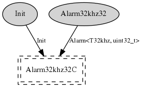

Component: tos.platforms.telosa.chips.cc2420.HplCC2420AlarmC
generic configuration HplCC2420AlarmC()
HPL implementation of 32khz alarms for the ChipCon CC2420 radio
connected to a TI MSP430 processor.
- Author:
-
Jonathan Hui <jhui@archrock.com>
- Version:
-
$Revision: 1.4 $ $Date: 2006-12-12 18:23:44 $
Provides
interface
Alarm<T32khz, uint32_t> as
Alarm32khz32Wiring
